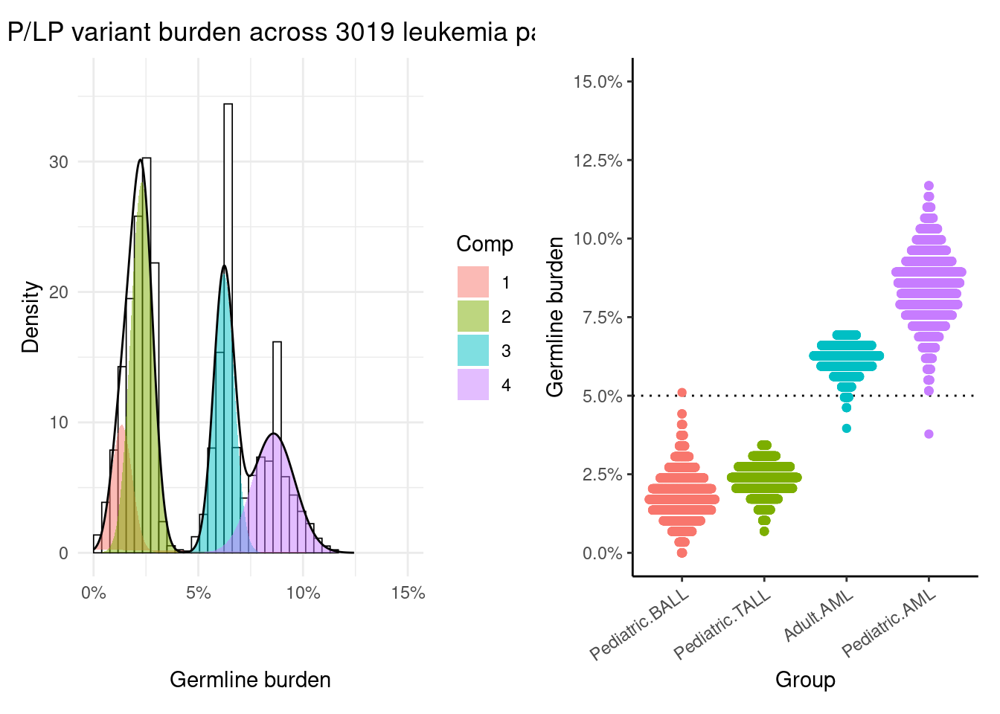

Childhood cancers, of which acute leukemia is the most common, present both a clinical need and a model for cancer more generally. These tumors often lack recurrent gene mutations, instead driven by structural variants (SVs) which rewire multiple genes. Many SVs are missed by standard karyotyping (chromosomal analysis), and all raise a key question: where do these SVs come from?
A seemingly straightforward answer is that mammals have three deeply conserved genes, millions of years old, whose function is to cut-and-paste DNA, and when these genes are inappropriately activated, structural variants ensue. The precise nature of these cut-and-paste enzymes (RAG1, PGBD5, and THAP9) addresses a key difference between pediatric and adult tumors (namely, the fact that most pediatric tumors harbor very few mutations). RAG1 is critical for immune cell maturation, as it allows B and T (lymphoid) cells to activate in response to specific non-self proteins. However, in lymphoblastic leukemia and lymphoma (which together consitute the most common type of childhood cancer), off-target activity of RAG1 is sufficient to induce some of the same gene fusions seen in patients. Meanwhile, in most childhood solid tumors, the PGBD5 transposase gene is inappropriately activated, leading to the type of cut-and-paste SVs that characterize ultra-low-mutation-burden rhabdoid tumors.
But there is at least one major exception: none of the known transposase genes appear to be activated in acute myeloid leukemia (AML), nor are classical tumor suppressor genes like TP53 often mutated or deleted in pediatric AML patients. Why is AML different from most other childhood tumors? Could inherited genetic variants explain the missing mechanism in AML (and especially pediatric AML)?
A preview
For counts, such as pathogenic germline variants in leukemia, we can use Poisson models:
Code
combined <-read.csv(url("https://trichelab.github.io/data/combined.csv"),row=1)combined$Source <-relevel(relevel(relevel(factor(combined$Source), 4), 4), 4)combined$Lineage <-relevel(relevel(factor(combined$Lineage), 3), 3)combined$Group <-paste(combined$AgeGroup, gsub("\\-", "", combined$Lineage))combined$Group <-relevel(relevel(factor(combined$Group), 4), 4)with(combined, table(Group, Sex))## Sex## Group Female Male## Pediatric BALL 789 941## Pediatric TALL 108 322## Adult AML 140 200## Pediatric AML 251 268fit2 <-glm(G_PLP ~ Group + Source, data=combined, family=poisson)summary(fit2)## ## Call:## glm(formula = G_PLP ~ Group + Source, family = poisson, data = combined)## ## Coefficients:## Estimate Std. Error z value Pr(>|z|) ## (Intercept) -4.05445 0.18186 -22.295 <2e-16 ***## GroupPediatric TALL 0.32892 0.35170 0.935 0.3497 ## GroupAdult AML 0.07997 1.12443 0.071 0.9433 ## GroupPediatric AML 0.49548 1.00940 0.491 0.6235 ## SourceTARGET 1.06301 1.02985 1.032 0.3020 ## SourceUBTF 1.24533 1.06695 1.167 0.2431 ## SourceBEAT_AML 1.23658 1.10782 1.116 0.2643 ## SourceZeroCancer 1.68716 0.72613 2.324 0.0202 * ## ---## Signif. codes: 0 '***' 0.001 '**' 0.01 '*' 0.05 '.' 0.1 ' ' 1## ## (Dispersion parameter for poisson family taken to be 1)## ## Null deviance: 739.77 on 3018 degrees of freedom## Residual deviance: 680.26 on 3011 degrees of freedom## AIC: 910.72## ## Number of Fisher Scoring iterations: 6library(nloptr)library(effects)plot(predictorEffects(fit2), ylab="Burden", axes=list(x=list(rotate=35)))
However, sometimes we are curious if a natural boundary exists in the data, suggesting that a more than one process is generating the observations. We can use resampling and mixture models to probe this:
Finally, we might want to plot the two results alongside one another.
Code
library(patchwork)p1 + p2

Below, we will walk through each of these steps.
Modeling germline burden with Poisson regression
We have collected and harmonized several large WGS/WES studies to investigate evidence for disparities in genetic variants between acute leukemia types. Here, we shall focus on germline pathogenic/likely pathogenic (P/LP) variants with seemingly relevant consequences for blood and immune development. Counts of these (somewhat rare) germline P/LP variants are integers, so we use Poisson regression for a first pass to model variant counts across groups.
It seems that, after correcting for who called the variants, there are a wide range of estimates for the relative risk of germline P/LP variants by group. B-ALL seems to have the lowest burden, but beyond that, it’s tough to make any strong conclusions about what’s going on. Let’s try another way.
Resampling-based inference of germline burden
We note that AML seems to predict a higher germline variant load than ALL. But suppose the Poisson model just isn’t a good fit for the data, or different authors apply different criteria, or something else is wrong with the way we have modeled the occurrence of germline variants. We can apply an orthogonal brute-force approach, which is to resample over and over without replacement. Note: we are tabulating the fraction of subjects with 1 or more G_PLP variants, rather than estimating the probability of seeing any G_PLP variants in a group of cases, which is subtly different from Poisson regression. In the end, we arrive at similar conclusions (specifically, More Research Is Needed :tm:).
When you ran the code in the Poisson regression chunks above (and you did run the code, right? That’s the whole point of this exercise), you may have noticed a commented-out piece of code to make effect size plots. The same approach we took to resampling can be applied to all sorts of questions, and in fact the sampling package on CRAN is dedicated to implementing fancy designs for biased sampling.
Exercise
Can you find examples where our predictions are inaccurate? Are there specific cases with high variant burdens not explained by any fit?
Modeling human biology is complicated (you heard it here first). Nevertheless, it is somewhat unlikely that AML and ALL would show such significant differences in clinically annotated germline variant frequency across five different cohorts (each comprising multiple clinical trials, across decades of studies) by chance. It seems that relevant germline variants are found in at least 5% of AML cases, and the > 5% burden in AML consistently emerges across age groups and studies. Moreover, pediatric AML is the group of patients where this threshold is most consistently crossed by random samples of patients from existing cohorts.
We have previously proposed that all patients who present with acute leukemia should be offered germline genetic testing, as should their family members, in light of the role for related donors in stem cell transplantation. The above findings serve to strengthen this statement: given the cost (median of about $1.1M US) to treat a child with AML, successfully or otherwise, the cost of germline genetic testing (about $400 for whole-genome sequencing in 2024) is a drop in the ocean. Registries like Project EveryChild ease the challenge of historical comparison, so one might ask, what’s standing in the way?